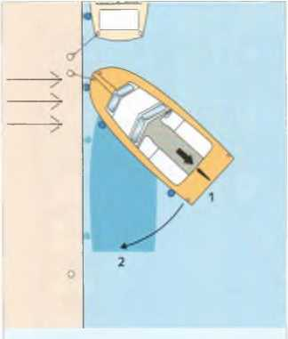
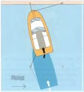
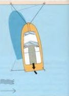

ШВАРТОВКА

Швартовка против течения и ветра
- Приближайтесь к причалу под максимально острым углом, приблизившись примерно на половину длины лодки. Отверните.
- Поверните двигатель в сторону причала. Включите задний ход. Лодка сначала остановится, а затем начнет тянуть
кормой к причалу.
- Выключите двигатель. Поверните двигатель в противоположном направлении. Двигатель вперед.
Корма поворачивается к причалу, и лодка набирает скорость вперед
- Поверните двигатель в среднекорпусное положение. Выключите двигатель. Если лодка не останавливается сразу
из-за течения или ветра, слегка дайте задний ход и остановите.
У моторных лодок нет тормозов. Скорость можно погасить только кратким включением заднего хода. По возможности
всегда следует швартоваться против течения или ветра. Если ветер и течение направлены в разные стороны, следует
швартоваться против того фактора, который сильнее влияет на лодку.
Течение или ветер спереди естественно замедляют лодку, тогда как ветер или течение сзади создают
нежелательное ускорение. Сильный боковой ветер может сделать невозможным подход лагом к причалу.
Иногда боковой эффект винта может помочь при швартовке. При правом вращении винта «удобной стороной» является
левый борт: при включении заднего хода корма автоматически подтягивается к причалу. У Z‑приводов этот эффект
выражен слабее.

Швартовка вдоль причала невозможна: либо ветер дует против течения параллельно причалу, либо дует сильный ветер со
стороны причала.
- Приближайтесь к причалу под крутым углом. Установите прочные кранцы на носу. Остановите двигатель или ненадолго
дайте задний ход.
Закрепите носовой швартов на берегу.
- Поверните двигатель в сторону причала, медленно дайте задний ход.
- Корма повернется к причалу, носовой швартовый бе позволяет носу отклониться от причала.
Оставьте трос только настолько, чтобы нос мог поворачиваться.
- Когда лодка будет почти параллельна причалу, кратковременно поверните руль в противоположную сторону, чтобы
компенсировать поворот.
Остановите двигатель. Закрепите кормовой швартов.
- ► Все манёвры следует выполнять только с таким ускорением, которое необходимо для сохранения управляемости.
- ► При приближении к судам, пришвартованным у берега узких водных путей, следует снижать скорость, чтобы избежать
опасного всасывания и волн.
- ► Никогда не выполняйте маневры с помощью швартовных тросов вручную, всегда оборачивайте трос вокруг кнехта или
столба.

Швартовка против ветра (течения) с жестким гребным валом и рулем
По возможности, швартуйтесь «хорошей стороной» вперед, т.е. с правосторонним гребным винтом на левом борту.
- Подходите под углом примерно 45°. Хорошо защитите носовую часть кранцами. Закрепите носовой швартов к берегу.
Поверните руль посередине – это не имеет эффекта – и полностью включите задний ход с двигателем.
- Эффект винта приводит к тому, что корма судна приближается к причалу.

Швартовка против ветра (течения) с неблагоприятной стороны
- Подходите под углом примерно 45°, закрепите кранец на носовой части и зафиксируйте носовой швартов на берегу.
Поверните руль к в направлении воде и медленно двигайтесь вперед.
- Корма притягивается к причалу носовым швартовом, который становится своего рода «пружинным» швартовом тросом.
Если бы вы в этой ситуации двигались задним ходом с включенным двигателем, корма оттягивалась бы от причала
из-за смещения винта. Руль был бы неэффективен. Здесь особенно очевидна разница между управляемым гребным винтом
и неподвижным валом с лопастью руля.


Вход в слип (место перпендикулярной швартовки носом) при боковом течении (и ветре) с использованием Z-образного
привода
- Подойдите к швартовочной свае ц наветренной стороны под острым углом, слегка поверните на
наветренную сторону и привяжите кормовой швартов. Поддерживайте поступательное движение.
Натяните швартов достаточно, чтобы предотвратить отклонение кормы в сторону.
- Руль на наветренную сторону для компенсации бокового течения или ветра давящих на корму.
Остановите двигатель. Сначала закрепите наветренный носовой швартов на берегу.
Затем опустите подветренный швартов.
- Подъезжайте к подветренной свае, двигайтесь задним ходом с включенным двигателем и
подтяните корму к подветренной свае. Остановите двигатель. Опустите подветренный
кормовой швартов. Отрегулируйте носовой и кормовой швартовы вручную, пока лодка
не займет правильное положение в слипе. Выключите двигатель.
Швартовка к бую
Следите, чтобы не пройти над буйрепом (крепление буя) и не намотать его на винт. Поэтому к бую всегда подходят с
подветренной стороны.
-
► На стоячей воде подходят к бую против ветра, поскольку буй лежит по ветру.
-
► На течении подходят против течения, так как именно оно определяет положение буя, если только течение не
очень слабое и ветер не намного сильнее.
Перед тем как оставить судно после швартовки на длительное время, необходимо закрыть все забортные клапаны
и выключить главный выключатель бортовой сети.
Назад Вперед